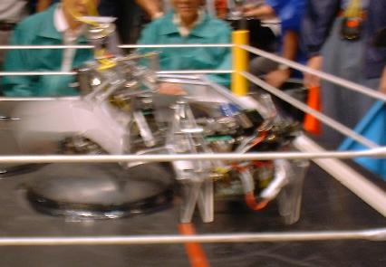
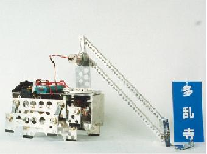
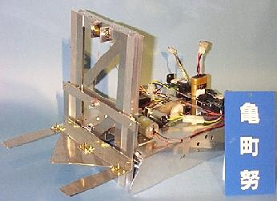
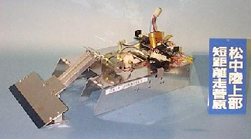
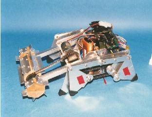
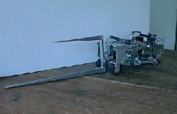

ココでは私たちが第４回大会から製作し出場してきたマシンの紹介をいたします。
| ・第４回大会
 |
・マシン名：多乱寺
・コメント ：記念すべきかわさき初出場マシン。この時はなにも知らなかったのでとりあえずダブルクランク機構を使用した簡単な機構で作ったハズが一番故障個所の多い所になってしまいました。 ・成績 ：予選トーナメント２回戦敗退
|
| ・第５回大会 | ・マシン名 ：亀町努
・コメント ：昨年優勝マシンの「もんじゅ」の脚をまねて製作したつもりが技術力が足らず中途半端になってしまいました。またこの年からリング上の障害物が著しく巨大かつ大量に配置されており、どのチームも唖然としておりました。今後はこの段差を越えられる脚を製作することが重要になっていきました。 ・成績 ：予選トーナメント１回戦敗退
|
|  | マシン名 ：松中陸上部短距離走菅原
・コメント ：「亀町努」と同じ脚機構を持つロボットですがこちらは腕の機構を変ええていきました。この年は２台製作したためかマシンの完成度が低くなってしまいました。設計者の力不足が主な原因です。無理な設計はしないほうがよいという教訓になりました。 ・成績 ：予選トーナメント１回戦敗退
|
| ・第６回大会
 |
・マシン名 ：天一Ｎｅｇｉｏｎｅ
・コメント ：去年の教訓を生かそうとなるべく簡単で頑丈な脚を目指して製作されたマシンです。しかし、もろもろの事情でメンバーが全員で製作に当たれる日数が限られてしまい駆動部に使用したネジが走行中にゆるむという致命的な欠点を背負ってしまいました。 ・成績 ：予選トーナメント１回戦敗退
|
| ・第７回大会
 |
・マシン名 ：Ｓｅｃｏｎｄ ｔｏ ｎｏｎｅ
・コメント ：昨年の「天一Ｎｅｇｉｏｎｅ」をベースに改良したマシンです。脚回りはほぼリニューアルして頑丈にしました。予備の部品を作る余裕がなかったのですが、大会における故障は全くありませんでした。問題視されていた段差も何とか乗り越え、見事本戦出場を勝ち取ったマシンです。 成績 ：予選トーナメント３回戦敗退
|